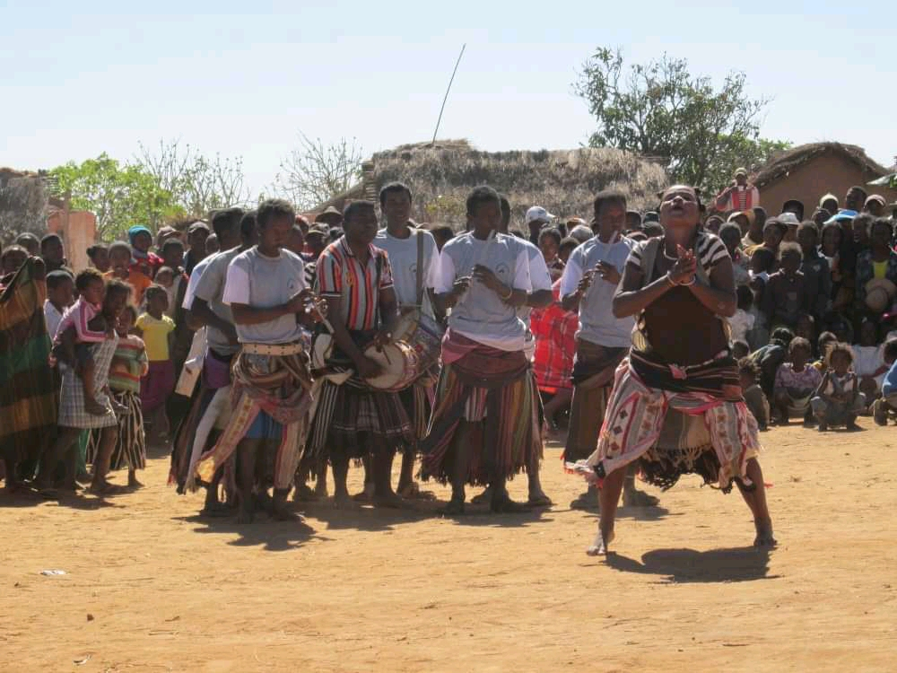
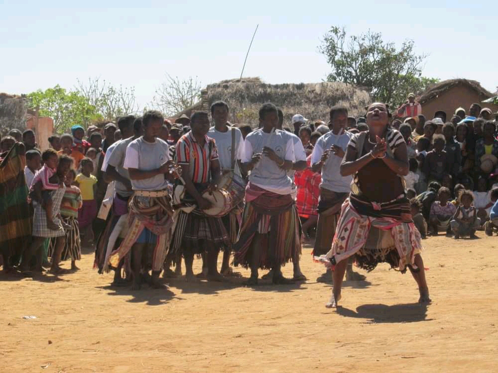

BLOG TOURISTIQUE
 



FESTIVITES CHEZ LES BARA
Le Bara fait partie des dix huit ethnies de Madagascar et occupe presque la totalité de la
région Ihorombe, juste après Ambalavao jusqu'à Sakaraha le long de la RN7 et dont Ihosy
étant la capitale régionale. Cette zone est l'une des plus riches de Madagasacr ent termes de ressources
minières, de biodivesité, de sites écotouristiques, d'héritage culturel, etc.
Pour le peuple Bara, les festivités sont toujours accompagnées de danses et de musiques traditonnelles, dont la danse la plus spectaculaire demeure le "Papango", qui comme son nom l'indique mime le mouvement d'un oiseau prédateur très connu à Madagascar
Outre les danses, les luttes à mains nues entre deux hommes ou "Ring" sont également très populaires dans cette région. Il s'agit d'un sport spectaculaire pratiqué par les Bara depuis leur jeune âge. Considérés comme de redoutables guerriers, les Bara sont craints de toutes les autres ethnies malgaches. Pendant la lutte, la victoire reviendra à celui qui arrive à faire toucher les deux épaules de l'autre à terre. retour